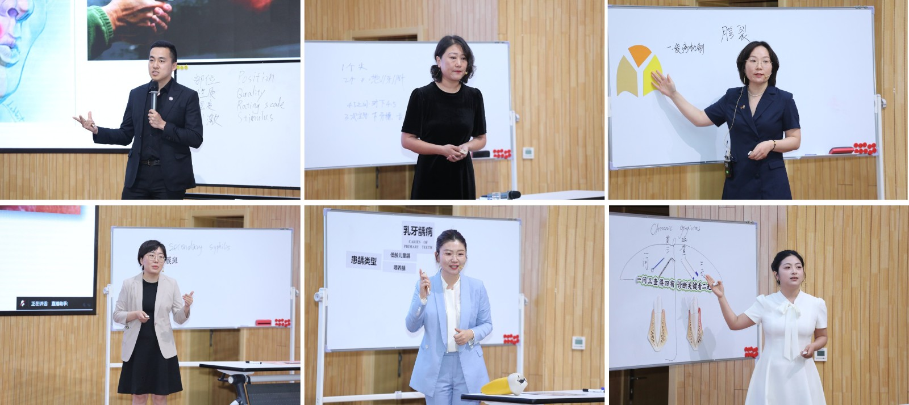

学院通知 · 教学通知
全国优秀口腔医学青年教师示范授课巡讲活动（石家庄站）顺利举行
发布时间：2026/07/01
2026年6月27日，由口腔医学人才培养模式改革虚拟教研室主办，四川大学华西口腔医学院与河北医科大学口腔医学院联合承办的全国优秀口腔医学青年教师示范授课巡讲活动在河北石家庄顺利举办。河北医科大学梁磊副校长、口腔医学院李增宁书记出席活动，口腔医学院副院长刘庆主持。活动特邀北京大学胡文杰教授、上海交通大学王丽珍教授、河北医科大学马哲教授、四川大学沈颉飞教授、空军军医大学蒋文凯教授担任点评嘉宾，全国近400名师生线上线下同步观摩学习。 参与授课展示的6位优秀青年教师立足口腔医学教学与临床实际，巧妙将数字化前沿技术、典型临床案例融入理论教学，课程设计新颖、课堂呈现生动、理论与实践紧密衔接，充分展现了新时代口腔医学青年教师扎实专业功底和卓越教学风采。点评专家围绕课程架构、教学创新、课程思政等关键维度进行了深度剖析与精准把脉，既肯定了亮点，又指明了教学优化的具体路径。与会教师在满意度反馈中一致表示，此次授课巡讲内容详实、实操性强，对优化教学设计、 深化医教融合、 提升教学 水平 具有重要借鉴意义。 本次活动依托虚拟教研室平台优势，有效打破了院校与地域间的教学资源壁垒，构建全国口腔医学师资互联互通、研学互促的协同发展平台。活动的成功举办不仅助力青年教师锤炼教学基本功、深耕教学改革，更有力推动了优质口腔教学资源的跨区域共建共享，加速了口腔医学教研的数字化、协同化进程，对健全口腔医学人才培养体系、全面提升师资综合素养、助推我国口腔医学教育高质量发展具有重要示范与引领价值。
